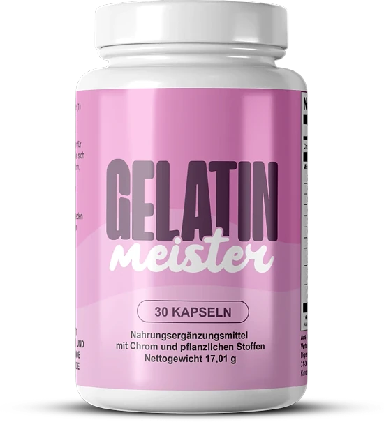

Was ist Gelatin Meister und wie wirkt es?
Kurz gesagt ist Gelatin Meister eine Kapsel zur Nahrungsergänzung, die die Marke als natürliche Figur-Formel bezeichnet. Es soll das Gewichtsmanagement und den Umgang mit Heißhunger unterstützen, ohne eine vielfältige Ernährung zu ersetzen. Vor allem Erwachsene, die eine praktische Unterstützung neben einer bewussten Ernährung wollen, sind gemeint. Das Produkt wird als Ergänzung zu einem ganzheitlichen Ansatz vorgestellt, nicht als einzige Antwort. Eine Flasche ist dabei genau auf einen Monat der täglichen Einnahme ausgelegt.
Der Name kann täuschen: Es gibt keine Gelatine zum Anrühren, das Etikett nennt ein Präparat „mit Chrom und pflanzlichen Stoffen“. Mit 30 Kapseln in der Flasche und einer Einnahme pro Tag dauert die Kur einen Monat. Die Verpackung trägt ein deutsches Etikett mit allen vorgeschriebenen Angaben.
Die Zusammensetzung umfasst elf Wirkstoffe, wie Apfelessig, Zimt, Bitterorange und Resveratrol. Der Hersteller gibt an, jede Zutat und ihre Menge für eine optimale Aufnahme gewählt zu haben. Die Marke spricht außerdem von einer Formel ohne schädliche Chemikalien oder künstliche Zusatzstoffe, geeignet für eine längere Anwendung. Die Kapselhülle ist pflanzlich, und die Einnahme erfordert keinerlei Vorbereitung.
Die Website stützt sich vor allem auf Chrom und seinen Beitrag zu einem normalen Makronährstoffwechsel. Grüntee, Pfeffer und Bitterorange zielen auf den Stoffwechsel, Ingwer und Zimt auf die Verdauung.
Der Hersteller nennt weniger Heißhunger nach zwei bis drei Wochen und empfiehlt mindestens drei Monate. Die Einnahme ist auf Wochen angelegt, nicht auf sofortige Ergebnisse. Die Formel ist damit eher als längerfristige Begleitung gedacht als als kurzfristige Maßnahme.
Das Etikett nennt die Herstellung in den USA und den Vertrieb in Europa durch Digistore24 MSLW Limited (Dublin). Die Flasche nennt ein Nettogewicht von 17,01 g.
Als Nahrungsergänzung erhebt es nicht den Anspruch, Krankheiten zu diagnostizieren, zu behandeln, zu heilen oder vorzubeugen. Eine vielfältige Ernährung bleibt unverzichtbar, und die Wirkung variiert von Mensch zu Mensch.
Gelatin Meister Inhaltsstoffe
Die Flasche von Gelatin Meister gibt die Menge jedes Wirkstoffs pro Kapsel an:
Chrom, als Chrompicolinat (100 µg, 286 % NRV): trägt zu einem normalen Stoffwechsel der Makronährstoffe bei.
Grüntee, 154 mg: Blattextrakt mit vielen Catechinen.
Apfelessig (150 mg): eine traditionelle Zutat mit Bezug zur Verdauung.
85 mg Berberin: ein pflanzlicher Wirkstoff mit langer Tradition.
Zimtkassie (20 mg) und Ingwer (50 mg): für die Verdauung genutzt.
Begleitende Pflanzen: Bitterorange, Cayenne, Königinblume, Koreanischer Ginseng und Resveratrol in kleinen Mengen.
Die Bitterorange ist eine natürliche Quelle von Synephrin, und das Resveratrol stammt aus der Wurzel des Japanischen Staudenknöterichs. Der Rest besteht aus einer Hülle aus Hypromellose, Cellulose und Rieselhilfsmitteln.
Die Angaben pro Kapsel machen die Zusammensetzung transparent und leicht prüfbar. Bezugswerte gibt es nur für das Chrom, nicht für die Pflanzen. Aktive Extrakte wie Grüntee und Bitterorange machen eine sorgfältige Lektüre der Hinweise nötig. Für Menschen mit Unverträglichkeiten ist die vollständige Liste hilfreich. Grüntee ist mit 154 mg der am höchsten dosierte Pflanzenstoff, gefolgt von Apfelessig mit 150 mg. Die anderen Pflanzenextrakte sind wesentlich geringer dosiert, manche nur mit fünf oder einem Milligramm. So liegt die gesamte Zusammensetzung offen.
Gelatin Meister Nebenwirkungen
Der Hersteller beschreibt Gelatin Meister als natürliches Produkt, das die meisten gut vertragen. Laut FAQ sind Effekte selten und beschränken sich oft auf leichte Verdauungsbeschwerden.
Die enthaltenen Grüntee-, Bitterorangen- und Cayenneextrakte erfordern bei empfindlichen Personen Aufmerksamkeit. Laut Etikett ist es nicht für Personen unter 18 Jahren und nicht für Schwangere oder Stillende geeignet, und die Dosis darf nicht überschritten werden. Die Dosis von Beginn an genau einzuhalten, hilft, die Reaktion des Körpers in den ersten Tagen zu beobachten.
Menschen mit Diabetes oder Unterzuckerung erhalten einen Warnhinweis: Ein Arzt ist zu fragen. Die FAQ nennen auch Bluthochdruck und Blutverdünner und empfehlen zwei Stunden Abstand. Die Behörden haben die Angaben der Marke nicht bewertet, so die Website. Die Hinweise sind typisch für Präparate aus Chrom, Gewürzen und Pflanzenextrakten.
Verwenden Sie keine Flasche mit beschädigtem oder fehlendem Originalitätsverschluss. Bei Unwohlsein die Kur unterbrechen und mit dem Etikett ärztlichen Rat einholen. Jeder reagiert anders, und eine medizinische Fachkraft kann Sie gut beraten. In der Apotheke lässt sich klären, ob sich die Inhaltsstoffe mit anderen Mitteln überschneiden. Am einfachsten bringt man die Flasche zum Arzt mit, damit er die Zutatenliste ansehen kann. Bleiben Beschwerden bestehen, ist eine Pause bis zur ärztlichen Abklärung sinnvoll. Wer zu Empfindlichkeiten neigt, beobachtet die Verträglichkeit in den ersten Tagen am besten besonders aufmerksam.
Gelatin Meister Dosierung
Die Verzehrempfehlung auf der Flasche lautet eine Kapsel pro Tag für Erwachsene. Empfohlen wird die Einnahme mit viel Wasser vor einer Hauptmahlzeit.
Ein Monat Einnahme passt in eine Flasche mit 30 Kapseln. Trotz einer Seite mit zwei Kapseln empfiehlt das Etikett eine Kapsel pro Tag, und das gilt. Die Einnahme ist simpel: eine ganze Kapsel mit Wasser.
Regelmäßigkeit macht den Unterschied: Die Website nennt weniger Heißhunger und eine bessere Verdauung nach zwei bis drei Wochen. Deutlichere Effekte werden nach vier bis sechs Wochen genannt, mit einer Kur von mindestens 90 Tagen. Drei Monate Kur bedeuten also drei Flaschen. Selbst wenn sich wenig tut, bleibt es bei einer Kapsel; Geduld zählt mehr.
Die Website schlägt vor, die Kapsel mit gesunder Ernährung und Sport zu kombinieren. Die Verpackung betont: Ein Präparat ersetzt keine ausgewogene Ernährung.
Bewahren Sie die Flasche kühl und trocken unter 30 °C und außerhalb der Reichweite von Kindern auf. Eine feste Uhrzeit erleichtert die Regelmäßigkeit. Ein notiertes Startdatum erleichtert die Planung der weiteren Kur. Die Zeit vor dem Mittag- oder Abendessen ist ein praktischer fester Termin. Eine tägliche Gewohnheit sorgt dafür, dass die Kur ohne Lücken über die ganze empfohlene Dauer läuft. Eine Dosis zu vergessen ist kein Problem: Am Folgetag geht es mit einer Kapsel weiter.
Gelatin Meister – Rückerstattung
Für Gelatin Meister gilt laut offizieller Website eine 60-Tage-Geld-zurück-Garantie. Bei Unzufriedenheit lässt sich die vollständige Erstattung beantragen, im Rahmen der offiziellen Bedingungen.
Rückgabezeitraum: 60 Tage ab dem Kauf, mit der Rücksendung sämtlicher Flaschen. Startpunkt der 60 Tage ist das Bestelldatum.
Schritt eins: Der Kundenservice (support@centralmeister.com) braucht Ihre Bestellnummer und den Grund. Die Nachricht sollte Namen, Adresse und Kontaktdaten enthalten.
Schritt 2: Senden Sie das Paket an Gelatin Meister Returns, Kleine Esch 669, 2841 MK Moordrecht, Niederlande, und bewahren Sie die Sendungsnummer auf. Ohne Sendungsverfolgung wird die Rücksendung nicht berücksichtigt. Die Bestellbestätigung dient als Nachweis des Datums und hilft dem Kundenservice. Den Versand der Rücksendung übernimmt der Kunde, so die Richtlinie.
Schritt drei: Die Marke prüft das eingegangene Paket und bestätigt die Entscheidung per E-Mail. Die Auszahlung erfolgt auf das ursprüngliche Zahlungsmittel, in 5 bis 10 Werktagen. Erstattungen laufen immer über das beim Kauf verwendete Zahlungsmittel, und Fragen beantwortet der Kundenservice per E-Mail.
Die Flasche nennt ebenfalls support@centralmeister.com, und alle Bedingungen sind online nachzulesen, am besten vor dem Kauf. Die Garantie ist hilfreich, doch eine Prüfung vor dem Kauf bleibt sinnvoll und spart später Aufwand. Die Schritte sorgfältig zu befolgen, verhindert Verzögerungen. Der Support erklärt jeden Schritt bei Bedarf ausführlich per E-Mail. Die Unterlagen griffbereit zu haben, macht das ganze Verfahren schneller.
Gelatin Meister – Wo kaufen?
Gelatin Meister wird über die offizielle Website gelatinmeister.com verkauft, und die Zahlung wird von Digistore24 abgewickelt. Nach Angaben der Marke findet man es weder bei Amazon noch im Supermarkt oder in Apotheken. Vor dem Kauf lässt sich das komplette Etikett auf der offiziellen Website ansehen.
Ein Produkt von Dritten kann echt wirken, aber nichts beweist seine Herkunft. Hier entsteht ein echtes Risiko für Qualität und Sicherheit, ganz abgesehen von der Garantie. Die Bezugsquelle zu kontrollieren, bevor man bezahlt, erspart viele Probleme.
Die meisten Käufer bestellen daher direkt an der Quelle, um das authentische Produkt mit Kundenservice und voller Garantie zu erhalten. Die Bestellseite nennt eine Einmalzahlung; Fragen beantwortet der Kundenservice unter support@centralmeister.com. Das gelieferte Produkt entspricht dann genau dem Etikett der offiziellen Website. Auch der Kundenservice ist bei einer offiziellen Bestellung am einfachsten erreichbar. Bevor man bezahlt, sollte man die Adresse in der Browserzeile kurz prüfen. Die offizielle Quelle ist der beste und einfachste Schutz vor Fälschungen im Internet.
Prüfen Sie vor dem Abschluss Ihrer Bestellung, ob Sie sich auf der offiziellen Gelatin Meister-Website befinden, um Fälschungen zu vermeiden.
Um sicherzugehen, dass Sie das Originalprodukt erhalten, besuchen die meisten Nutzer die offizielle Website.
Ist Gelatin Meister Betrug?
Nach den verfügbaren Informationen ist Gelatin Meister kein Betrug. Das Präparat existiert tatsächlich, wird über Digistore24 verkauft und zielt auf Gewicht und Appetit.
Jeder Inhaltsstoff ist mit seiner genauen Dosis auf dem Etikett aufgeführt. Die zitierte Funktion des Chroms ist eine zugelassene Aussage.
Die Kontaktdaten sind vollständig: irischer Vertreiber, niederländische Rücksendeadresse und Support-E-Mail. Diese Angaben garantieren keine Wirkung, zeigen aber, dass der Verkauf nicht anonym erfolgt.
Achtung beim Countdown und bei den Bestandswarnungen auf der Bestellseite. Formulierungen wie „Fett verbrennen“ und nicht genannte Studien erscheinen auf der Verkaufsseite und sind kritisch zu sehen. Maßvolle Erwartungen und das Etikett sind die besten Orientierungspunkte. Ein Präparat ergänzt eine gesunde Lebensweise, ersetzt sie aber nie. Auf diese Weise beginnt die Kur sicher und gut vorbereitet.
Jede Bestellung ist durch eine 60-Tage-Geld-zurück-Garantie mit einem Schritt für Schritt erklärten Ablauf abgesichert. Ein faires Urteil setzt voraus, die empfohlene Kur vollständig durchzuführen. Im Zweifel und bei Medikamenten hilft ein Gespräch mit dem Arzt vor dem Start. Insgesamt spricht vieles für ein seriöses Produkt, auch wenn die Bestellseite stark auf Dringlichkeit setzt. Jeder reagiert anders, und der Arzt bleibt bei Problemen die Referenz.
Kurz gesagt kann Gelatin Meister das Gewichtsmanagement begleiten; bestellen Sie es auf der offiziellen Website und sprechen Sie bei einer Behandlung mit Ihrem Arzt.
Wer Produktdetails überprüfen oder die aktuelle Verfügbarkeit prüfen möchte, ist auf der offiziellen Gelatin Meister-Website am sichersten aufgehoben.